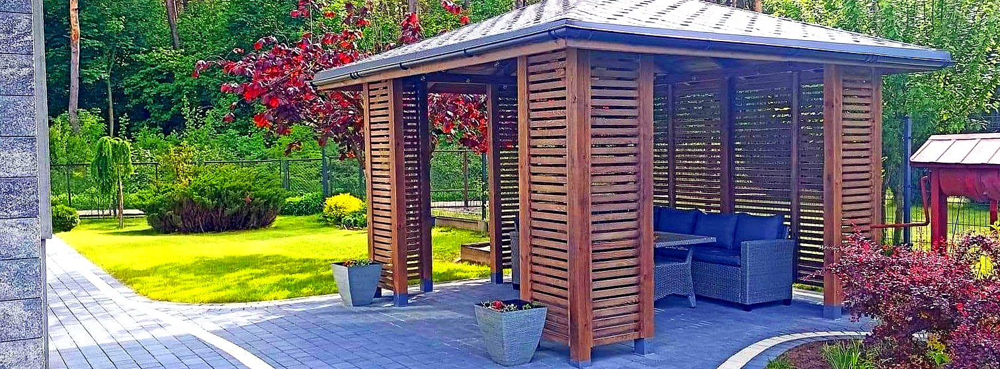

Tarasy, altany, zadaszenia i nasze autorskie drewniane żaluzje — projektujemy, wykonujemy i montujemy od początku do końca. Każda realizacja na wymiar Twojej przestrzeni.
Specjalizujemy się w drewnie na zewnątrz — od zadaszeń i altan po detale, które robią klimat w ogrodzie.

Wiaty garażowe, zadaszenia wejść i tarasów — z drewnianą okładziną, która wygląda jak mebel.

Miejsce na odpoczynek w ogrodzie — altany, pergole i wiaty biesiadne z litego drewna.

Tarasy z desek oraz lekkie, eleganckie zadaszenia ze szkłem i drewnem.

Nasze ruchome deseczki - regulowane okładziny dające cień, prywatność i charakter.

Smukłe donice, ławki, huśtawki i stoły — detale, które spinają całą aranżację.

Obudowy, osłony i aranżacje wokół domu — schludnie i pod jeden styl.
To rozwiązanie, z którego jesteśmy znani. Regulowane drewniane listwy dają cień i prywatność, a jednocześnie przepuszczają powietrze i światło — i wyglądają o klasę lepiej niż zwykła osłona.
Robimy je pod taras, wiatę, balkon czy elewację, dobierając układ i odcień drewna do domu i ogrodu.

Opowiedz, co chodzi Ci po głowie — taras, altana, zadaszenie czy drewniane żaluzje. Doradzimy i przygotujemy wycenę pod Twoją przestrzeń.
Zadzwoń: +48 501 219 459